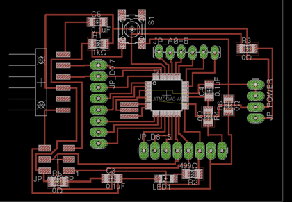

Kousuke Kikuchi
Fab Academy Participant and PhD Candidate
Week 16: Principles and Practices, Project management
What I did:
1. Tried to make Arduino compatible ATMega board. But failed.

The reason for it was unknown.
2. Checked all the sensor and an actuator for the final project with Arduino Hardware and Arduino IDE.
2.1 Air Pressure sensor:
#include <Wire.h>
const int address = 0x60; // address for this sensor
float read_coefficients(int total_bits, int fractional_bits, int zero_pad) {
unsigned char msb, lsb;
msb = Wire.read();
lsb = Wire.read();
return ((float) ((msb << 8) + lsb) / ((long)1 << 16 - total_bits + fractional_bits + zero_pad));
}
unsigned int read_adc() {
unsigned char msb, lsb;
msb = Wire.read();
lsb = Wire.read();
return (((unsigned int)msb << 8) + lsb) >> 6;
}
float a0, b1, b2, c12, c11, c22;
void setup () {
Wire.begin();
Serial.begin(9600);
Wire.beginTransmission(address);
Wire.write(0x04); // Read coefficient data
Wire.endTransmission();
Wire.requestFrom(address, 12); // Request 12 bytes
if (Wire.available()) {
a0 = read_coefficients(16, 3, 0);
b1 = read_coefficients(16, 13, 0);
b2 = read_coefficients(16, 14, 0);
c12 = read_coefficients(14, 13, 9);
c11 = read_coefficients(11, 10, 11);
c22 = read_coefficients(11, 10, 15);
}
}
void loop () {
Wire.beginTransmission(address);
Wire.write(0x12); // Start both conversions(Pressure and Temperature)
Wire.write(0x01);
Wire.endTransmission();
delay(5);
Wire.beginTransmission(address);
Wire.write((uint8_t)0x00); // Read pressure and temperature
Wire.endTransmission();
Wire.requestFrom(address, 4); // Request 4 bytes
if(Wire.available()) {
unsigned int Padc = read_adc();
unsigned int Tadc = read_adc();
float Pcomp = a0 + (b1 + c11 * Padc + c12 * Tadc) * Padc + (b2 + c22 * Tadc) * Tadc;
float Pha = Pcomp * 650 / 1023 + 500;
Serial.println(Pha);
}
delay(1000);
}
2.2 check for temperature and humidity sensor, DHT22
#include <DHT22.h>
// Only used for sprintf
#include <stdio.h>
// Data wire is plugged into port 7 on the Arduino
// Connect a 4.7K resistor between VCC and the data pin (strong pullup)
#define DHT22_PIN 7
// Setup a DHT22 instance
DHT22 myDHT22(DHT22_PIN);
void setup(void)
{
// start serial port
Serial.begin(9600);
//Serial.println("DHT22 Library Demo");
}
void loop(void)
{
DHT22_ERROR_t errorCode;
// The sensor can only be read from every 1-2s, and requires a minimum
// 2s warm-up after power-on.
delay(2000);
//Serial.print("Requesting data...");
errorCode = myDHT22.readData();
switch(errorCode)
{
case DHT_ERROR_NONE:
//Serial.print("Got Data ");
Serial.print(myDHT22.getTemperatureC());
Serial.print(",");
Serial.print(myDHT22.getHumidity());
Serial.println("\n");
//Serial.println("%");
break;
case DHT_ERROR_CHECKSUM:
Serial.print("check sum error ");
Serial.print(myDHT22.getTemperatureC());
Serial.print("C ");
Serial.print(myDHT22.getHumidity());
Serial.println("%");
break;
case DHT_BUS_HUNG:
Serial.println("BUS Hung ");
break;
case DHT_ERROR_NOT_PRESENT:
Serial.println("Not Present ");
break;
case DHT_ERROR_ACK_TOO_LONG:
Serial.println("ACK time out ");
break;
case DHT_ERROR_SYNC_TIMEOUT:
Serial.println("Sync Timeout ");
break;
case DHT_ERROR_DATA_TIMEOUT:
Serial.println("Data Timeout ");
break;
case DHT_ERROR_TOOQUICK:
Serial.println("Polled to quick ");
break;
}
}
2.3 CO2 Sensor
#define R 11 //led RED
#define L 12 //led YELLOW 1
#define G 13 //led GREEN
#define K 10 //led YELLOW 2
#define PIN 0 //analog PIN wired to co2 sensor
#define SOGLIA 1000 // 1000ppm OK value
unsigned int lettura = 0; //actual read value
unsigned int letturaOld = 0; //old read value
unsigned long time;
void reading(){ //led blinking while reading
digitalWrite(R, LOW);
digitalWrite(K, LOW);
digitalWrite(G, LOW);
int cont = 0;
while (cont < 15){
digitalWrite(L, HIGH);
delay(500);
digitalWrite(L, LOW);
delay(500);
cont++;
}
}
void victory(){ //led blinking when SOGLIA read
digitalWrite(R, LOW);
digitalWrite(G, HIGH);
int cont = 0;
while (cont < 15){
digitalWrite(L, HIGH);
digitalWrite(K, LOW);
delay(500);
digitalWrite(L, LOW);
digitalWrite(K, HIGH);
delay(500);
cont++;
}
}
void rightWay(){ //led blinking when lettura < letturaOld
digitalWrite(R, LOW);
digitalWrite(K, LOW);
digitalWrite(G, HIGH);
int cont = 0;
while (cont < 15){
digitalWrite(L, HIGH);
delay(500);
digitalWrite(L, LOW);
delay(500);
cont++;
}
}
void wrongWay(){ //led blinking when lettura > letturaOld
digitalWrite(R, HIGH);
digitalWrite(K, LOW);
digitalWrite(G, LOW);
int cont = 0;
while (cont < 15){
digitalWrite(L, HIGH);
delay(500);
digitalWrite(L, LOW);
delay(500);
cont++;
}
}
void setup(){
pinMode(PIN, INPUT);
pinMode(R, OUTPUT);
pinMode(L, OUTPUT);
pinMode(G, OUTPUT);
pinMode(K, OUTPUT);
Serial.begin(9600);
}
void loop(){
time = millis();
if ( time <= 300000) { //5 minutes heating time
digitalWrite(R, HIGH);
digitalWrite(L, HIGH);
digitalWrite(K, HIGH);
digitalWrite(G, HIGH);
letturaOld = analogRead(PIN); //keeps on reading
letturaOld = map(letturaOld,0,1023,350,10000);
Serial.print(time/1000);
Serial.println(" seconds elapsed. Heating in progress...");
delay(10000);
}
else if ( time > 300000 && time < 305000 ) { // leds off
digitalWrite(R, LOW);
digitalWrite(L, LOW);
digitalWrite(K, LOW);
digitalWrite(G, LOW);
}
else{
//blinking YELLOW led while reading
reading();
delay(1500);
lettura = analogRead(PIN);
lettura = map(lettura,0,1023,350,10000);
Serial.print("Old Value: "); //old reading
Serial.print(letturaOld);
Serial.print(" | New Value: "); //new reading
Serial.println(lettura);
if ( lettura < SOGLIA ){
victory(); //we're done! ding ding ding!
delay(1500);
}
else{
if (lettura < letturaOld)
rightWay();
else
wrongWay();
}
letturaOld = lettura;
lettura = 0;
delay(1500);
}
}
2.4 Moisture Sensor
const int VAL_PROBE = 3; // Analog pin 0
void setup() {
Serial.begin(9600);
}
void LedState(int state) {
digitalWrite(13, state);
}
void loop() {
int moisture = analogRead(VAL_PROBE);
Serial.println(moisture);
delay(1000);
}
2.5 Light sensor
float lux0 = 0;
void setup(){
Serial.begin(9600);
}
void loop(){
int in = analogRead(1);
float ar0 = (in * 5.0/1024)/10.0;
lux0 = (20.0/0.01) * ar0;
Serial.println(lux0);
delay(1000);
}
2.6 Thermistor
// constants
const float B = 3380;
const float Rr = 10.0;
const float Rt = 10.0;
const float Tk = 298.15;
void setup(){
Serial.begin(9600);
}
void loop(){
int n = analogRead(2);
float rr1 = Rr * n / (1024.0 - n);
float t = 1/(log(rr1/Rt)/B + (1/Tk));
float cel = t - 273.15;
Serial.println(n);
Serial.println(cel);
// convert from 25 degree
float temp = 25.0 - cel;
float temperature = 25.0 + temp;
Serial.println(temperature);
delay(1000);
}
3. Checked I2C communication between two Arduino boards.
3.1 Master Node Program
// Wire Master Writer
// by Nicholas Zambetti <http://www.zambetti.com>
// Demonstrates use of the Wire library
// Writes data to an I2C/TWI slave device
// Refer to the "Wire Slave Receiver" example for use with this
// Created 29 March 2006
// This example code is in the public domain.
#include <Wire.h>
void setup()
{
Wire.begin(); // join i2c bus (address optional for master)
Serial.begin(9600);
}
byte x = 0;
void loop()
{
Wire.beginTransmission(4); // transmit to device #4
Wire.write("Hello, Transmitter:: "); // sends five bytes
Wire.write(x); // sends one byte
Wire.endTransmission(); // stop transmitting
Serial.print("This is Master Arduino:: ");
Serial.print(x);
Serial.println(" times");
x++;
delay(3000);
}
3.2 Slave Node Program
// Wire Slave Receiver
// by Nicholas Zambetti <http://www.zambetti.com>
// Demonstrates use of the Wire library
// Receives data as an I2C/TWI slave device
// Refer to the "Wire Master Writer" example for use with this
// Created 29 March 2006
// This example code is in the public domain.
#include <Wire.h>
void setup()
{
Wire.begin(4); // join i2c bus with address #4
Wire.onReceive(receiveEvent); // register event
Serial.begin(9600); // start serial for output
}
void loop()
{
delay(100);
}
// function that executes whenever data is received from master
// this function is registered as an event, see setup()
void receiveEvent(int howMany)
{
while(1 < Wire.available()) // loop through all but the last
{
char c = Wire.read(); // receive byte as a character
Serial.print(c); // print the character
}
int x = Wire.read(); // receive byte as an integer
Serial.println(x); // print the integer
}
4. What should I do for the final project:
1. Making Arduino-compatible ATMega328P-AU board.
2. Designing a sensor node shield for a plant and LCD shield for display.
3. Connecting with LCD node until 24.
4. Displaying Ascii Art Face corresponding to enviroment of plant.
5. 3D design should be done after the determination of electronics design.